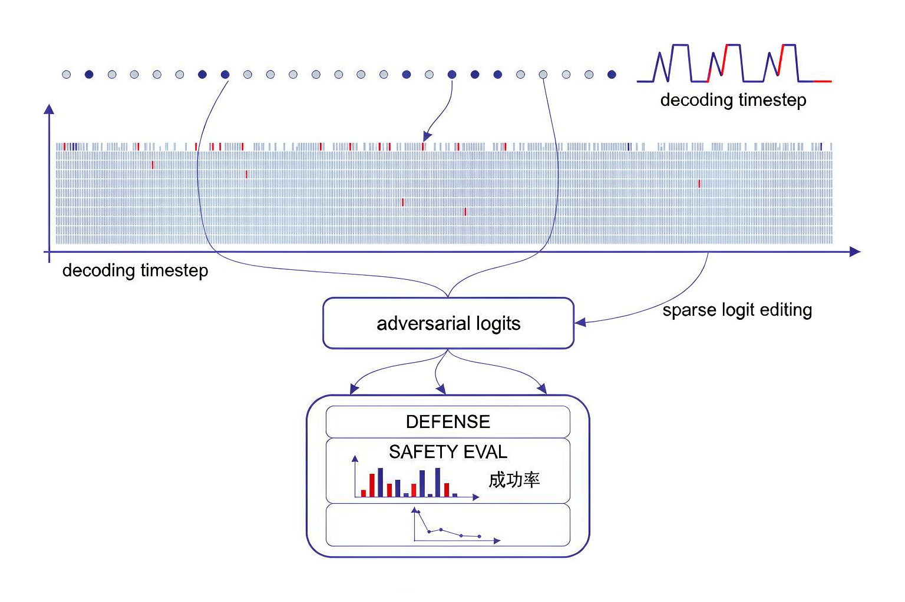

Problem
解决的问题
缺少一种既能保持高攻击成功率，又能实现极低计算开销、零辅助显存占用，且具备高度可解释性的大模型越狱测试框架。
Research on LLMs and VLMs · 2026 · CNIPA Patent
基于字典引导稀疏逻辑编辑的越狱安全评测方法及系统
Problem
缺少一种既能保持高攻击成功率，又能实现极低计算开销、零辅助显存占用，且具备高度可解释性的大模型越狱测试框架。
Value
彻底免除传统梯度攻击的高算力开销与辅助模型的显存开销，实现高效、流畅、可解释且鲁棒的大模型越狱安全评测。
Patent-grounded Academic Summary
主要创新性：首次提出无需梯度与辅助模型的稀疏逻辑注入机制：直接在解码阶段对不足词表 2% 的 logits 做加法摄动，单步开销不到 1 毫秒，零额外显存占用。
学术影响力：彻底免除传统梯度攻击的高算力开销与辅助模型的显存开销，实现高效、流畅、可解释且鲁棒的大模型越狱安全评测。该专利为大模型与多模态模型的安全评测、机制分析与系统防护提供了可迁移的方法和研究依据。

Technical Route
Innovation